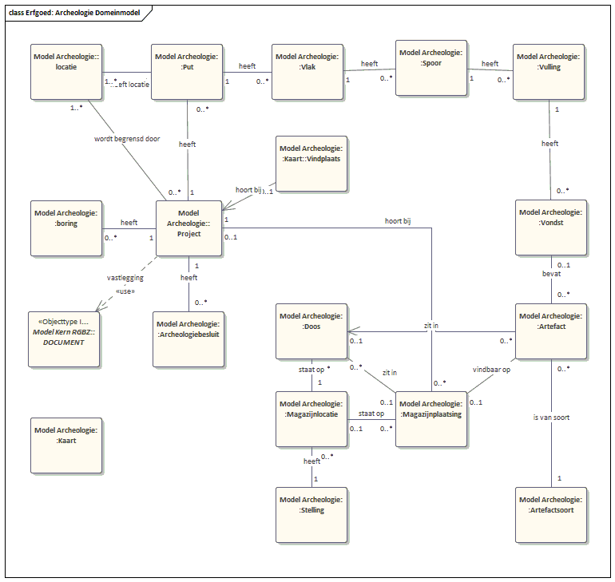

Archeologie
De aanwezige data in de applicaties vertaalt in het domeinmodel, zoals in onderstaand figuur is weergegeven. ‘Project’ staat hier centraal. De entiteiten ‘Put’ (met graafmachine gemaakte put), ‘Vlak’ (vlak in de diepte van de put, zegt iets over tijdsperiode), ‘Spoor’, ‘Vulling’ en ‘Vondst’ (gevonden objecten) geven de metadata aan, zoals die gebruikelijk zijn in Archeologie. Een put heeft een locatie en een ‘Project’ heeft een locatie die bestaat uit een polygoon (meerdere ‘Locatie’s als hoekpunten) die is af te beelden op een kaart.

Een ‘Vondst’ is altijd van een bepaald soort (leer, keramiek, glaswerk, etc.). Daarnaast heeft een ‘Project’ diverse besluiten (zie eerdere tekst) en meerdere documenten. Vondsten worden opgeslagen in een ‘Container’ met een eigen vindplaats.
Bij het metadateren van gegevens is zoveel mogelijk de ABR 2 (Archeologisch Basisregister) toegepast.